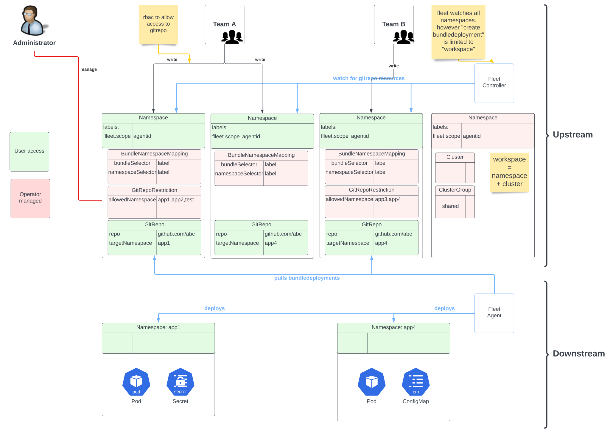

Configuração Multiusuário
SUSE® Rancher Prime Continuous Delivery usa Kubernetes RBAC sempre que possível.
Uma adição ao RBAC é o recurso GitRepoRestriction, que pode ser usado para controlar recursos GitRepo em um namespace.
Uma configuração Fleet multiusuário se parece com isto:
-
os inquilinos não compartilham namespaces, cada inquilino tem um ou mais namespaces no cluster upstream, onde podem criar recursos GitRepo.
-
os inquilinos não podem implantar recursos em todo o cluster e estão limitados a um conjunto de namespaces em clusters downstream.
-
clusters estão em um namespace separado.

|
informações importantes
A isolação dos inquilinos não é completa e depende do Kubernetes RBAC estar configurado corretamente. Sem a configuração manual de um operador, os inquilinos ainda podem implantar recursos em todo o cluster. Mesmo com as restrições SUSE® Rancher Prime Continuous Delivery disponíveis, os usuários estão restritos apenas a namespaces, mas os namespaces não oferecem muita isolação por si só. Por exemplo, eles ainda podem consumir quantos recursos quiserem. No entanto, as restrições SUSE® Rancher Prime Continuous Delivery existentes permitem que os usuários compartilhem clusters e implantem recursos sem conflitos. |
Exemplo SUSE® Rancher Prime Continuous Delivery Autônomo
Isso criaria um usuário 'fleetuser', que pode gerenciar apenas recursos GitRepo no namespace 'project1'.
kubectl create serviceaccount fleetuser
kubectl create namespace project1
kubectl create -n project1 role fleetuser --verb=get --verb=list --verb=create --verb=delete --resource=gitrepos.fleet.cattle.io
kubectl create -n project1 rolebinding fleetuser --serviceaccount=default:fleetuser --role=fleetuserSe quisermos dar acesso a múltiplos namespaces, podemos usar um único papel de cluster com duas vinculações de papel:
kubectl create clusterrole fleetuser --verb=get --verb=list --verb=create --verb=delete --resource=gitrepos.fleet.cattle.io
kubectl create -n project1 rolebinding fleetuser --serviceaccount=default:fleetuser --clusterrole=fleetuser
kubectl create -n project2 rolebinding fleetuser --serviceaccount=default:fleetuser --clusterrole=fleetuserIsso garante que os inquilinos não possam interferir nos recursos GitRepo de outros inquilinos, uma vez que não têm acesso aos seus namespaces.
Espaços de Trabalho Isolados no Rancher
Usuários pertencentes a um grupo/organização específica dentro da empresa podem querer desabilitar a visibilidade de seus clusters para usuários de outros grupos/organizações da mesma empresa.
Para alcançar essa isolação, o Rancher fornece GlobalRoles para permitir permissões aos usuários em certos recursos do Kubernetes. GlobalRoles têm a capacidade de limitar o acesso a namespaces específicos presentes no cluster, graças a NamespacedRules.
Quando um novo espaço de trabalho Fleet é criado, um namespace correspondente com o mesmo nome é gerado automaticamente dentro do cluster local do Rancher. Para que um usuário veja e implante recursos Fleet em um espaço de trabalho específico, ele precisa ter pelo menos as seguintes permissões:
-
listar/obter o recurso
fleetworkspaceem todo o cluster local -
Permissões para criar recursos Fleet (como
bundles,gitrepos, …) no namespace de suporte para o espaço de trabalho no cluster local.
Vamos conceder permissões para implantar recursos Fleet nos espaços de trabalho Fleet project1 e project2:
apiVersion: management.cattle.io/v3
kind: FleetWorkspace
metadata:
name: project1apiVersion: management.cattle.io/v3
kind: FleetWorkspace
metadata:
name: project2-
Crie um
GlobalRoleque concede permissão para implantar recursos Fleet nos espaços de trabalho Fleetproject1eproject2:
apiVersion: management.cattle.io/v3
kind: GlobalRole
metadata:
name: fleet-projects1and2
namespacedRules:
project1:
- apiGroups:
- fleet.cattle.io
resources:
- gitrepos
- bundles
- clusterregistrationtokens
- gitreporestrictions
- clusters
- clustergroups
verbs:
- '*'
project2:
- apiGroups:
- fleet.cattle.io
resources:
- gitrepos
- bundles
- clusterregistrationtokens
- gitreporestrictions
- clusters
- clustergroups
verbs:
- '*'
rules:
- apiGroups:
- management.cattle.io
resourceNames:
- project1
- project2
resources:
- fleetworkspaces
verbs:
- '*'O usuário agora tem acesso à aba Continuous Delivery no Rancher e pode implantar recursos Fleet tanto no espaço de trabalho Fleet project1 quanto no espaço de trabalho Fleet project2.
Para ter um ambiente bem organizado, cada espaço de trabalho deve ter seu próprio GlobalRole relacionado para ajudar na separação de funções e no isolamento exigido pelo cliente. Dessa forma, cada usuário pode ser atribuído a um ou mais GlobalRoles, dependendo das necessidades.
Permitir Acesso aos Clusters
Isso assume que todos os GitRepos criados por 'fleetuser' têm o rótulo team: one. Rótulos diferentes podem ser usados para selecionar diferentes namespaces de cluster.
Em cada um dos namespaces do usuário, como administrador, crie um BundleNamespaceMapping.
kind: BundleNamespaceMapping
apiVersion: fleet.cattle.io/v1alpha1
metadata:
name: mapping
namespace: project1
# Bundles to match by label.
# The labels are defined in the fleet.yaml # labels field or from the
# GitRepo metadata.labels field
bundleSelector:
matchLabels:
team: one
# or target one repo
#fleet.cattle.io/repo-name: simpleapp
# Namespaces, containing clusters, to match by label
namespaceSelector:
matchLabels:
kubernetes.io/metadata.name: fleet-default
# the label is on the namespace
#workspace: prod
A seção target do recurso GitRepo pode ser usada para implantar apenas em um subconjunto dos clusters correspondentes.
Restringindo o Acesso aos Clusters Downstream
Os administradores podem restringir ainda mais os inquilinos criando um GitRepoRestriction em cada um de seus namespaces.
kind: GitRepoRestriction apiVersion: fleet.cattle.io/v1alpha1 metadata: name: restriction namespace: project1 allowedTargetNamespaces: - project1simpleapp
Isso negará a criação de recursos em todo o cluster, o que pode interferir em outros inquilinos e limitar a implantação ao namespace 'project1simpleapp'.
Um Exemplo de Recurso GitRepo
Um recurso GitRepo criado por um inquilino, sem acesso de administrador, poderia ser assim:
kind: GitRepo
apiVersion: fleet.cattle.io/v1alpha1
metadata:
name: simpleapp
namespace: project1
labels:
team: one
spec:
repo: https://github.com/rancher/fleet-examples
paths:
- bundle-diffs
targetNamespace: project1simpleapp
# do not match the upstream/local cluster, won't work
targets:
- name: dev
clusterSelector:
matchLabels:
env: dev
Isso inclui o rótulo team: one e o targetNamespace obrigatório.
Juntamente com o BundleNamespaceMapping anterior, isso visaria todos os clusters com um rótulo env: dev no namespace 'fleet-default'.
|
|